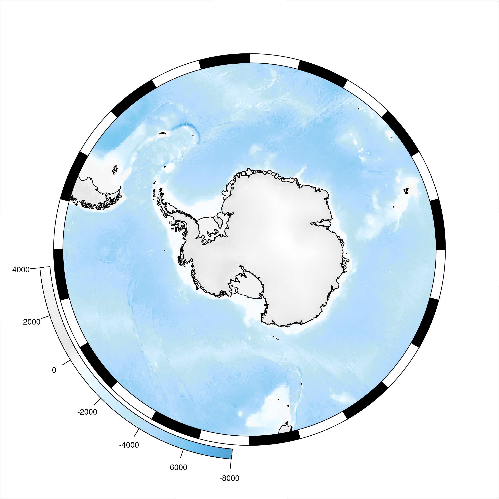
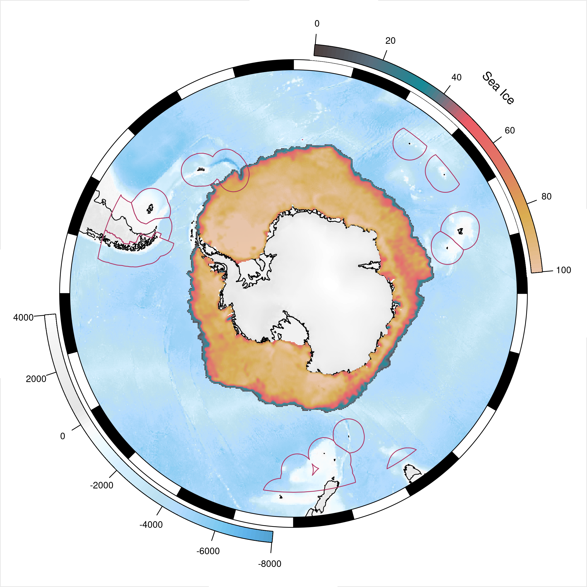
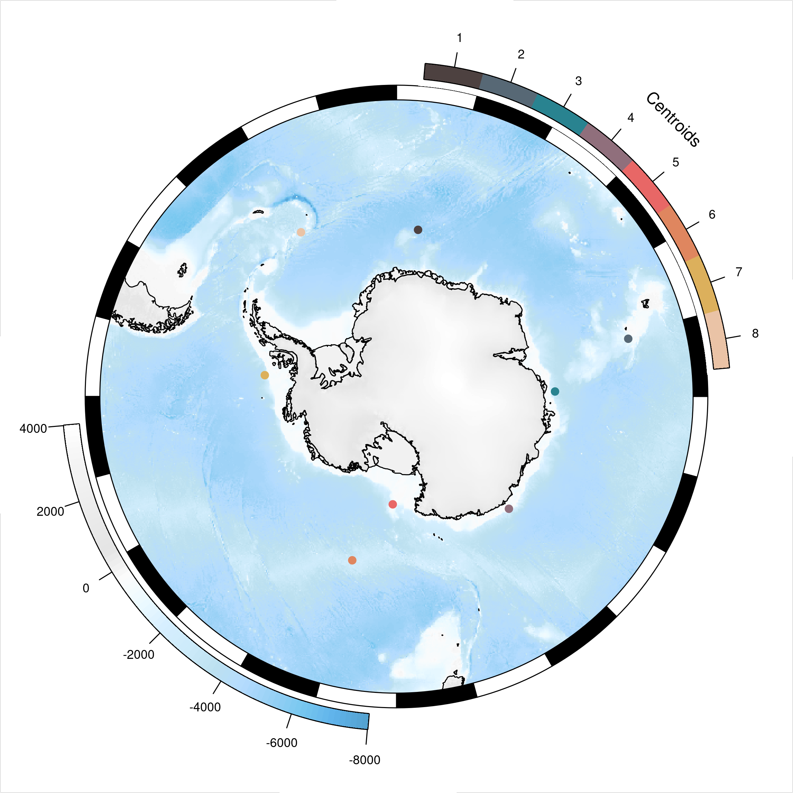
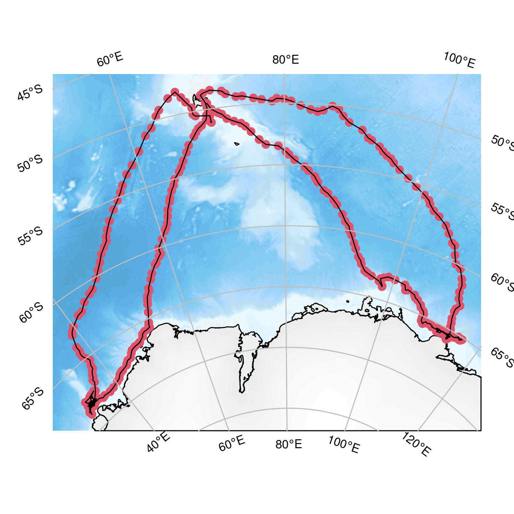
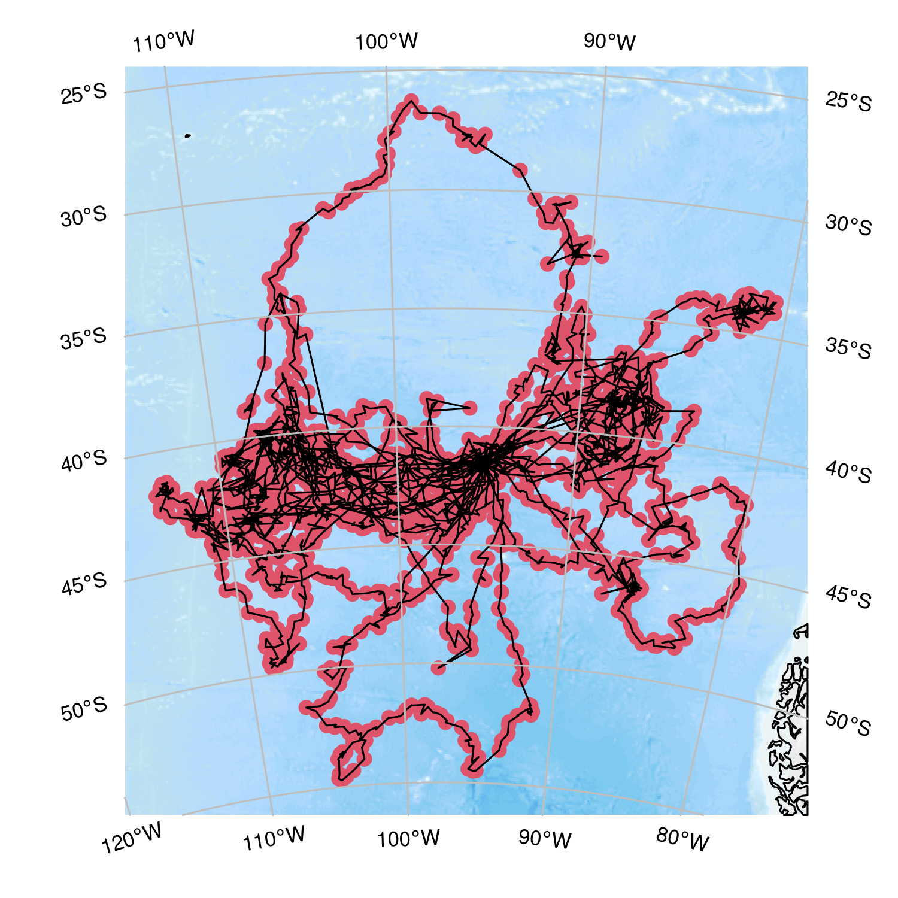
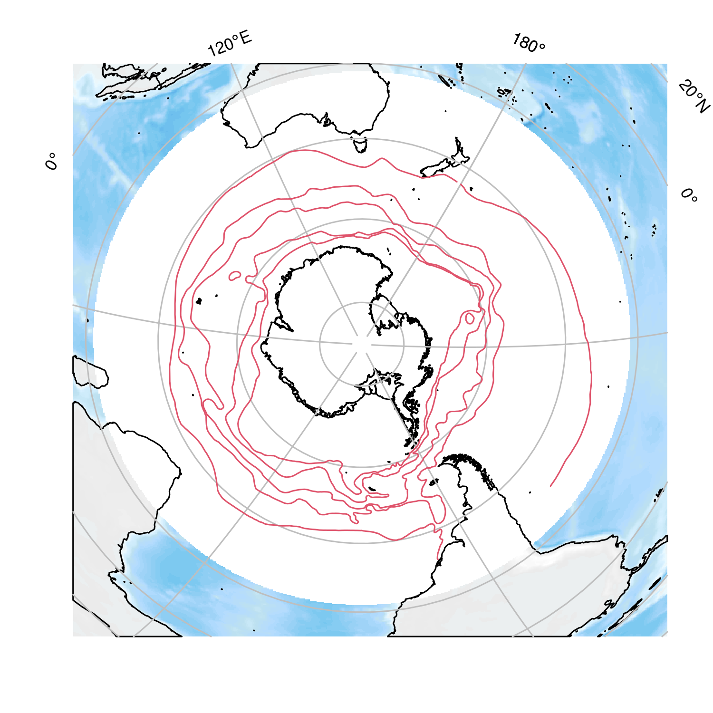
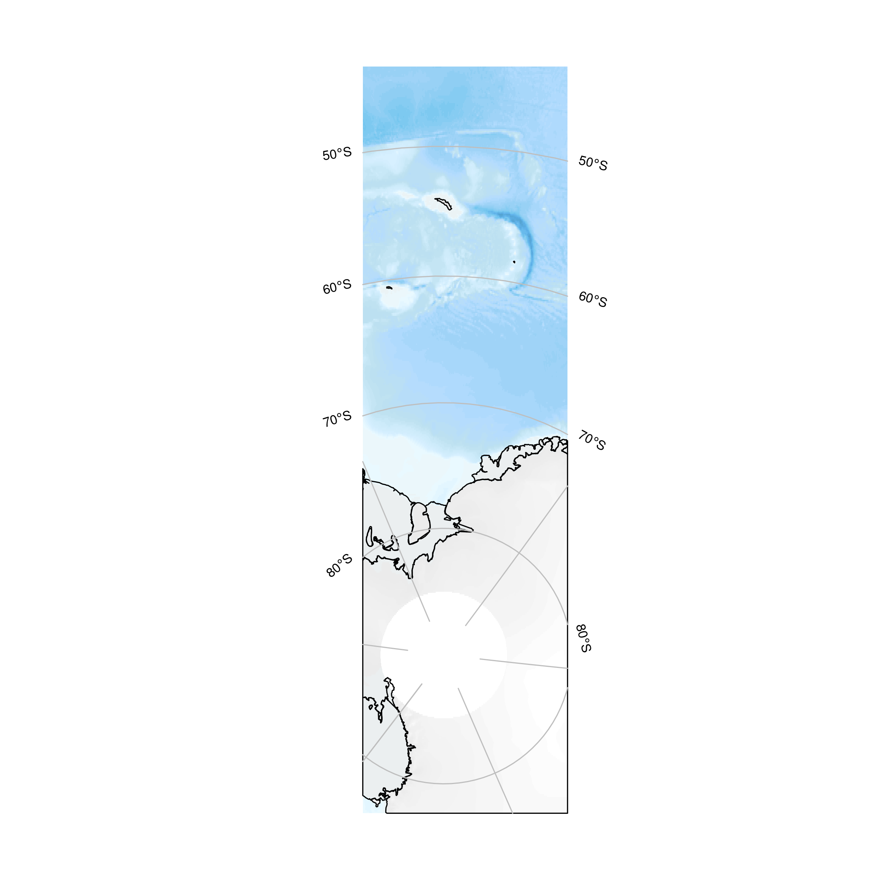
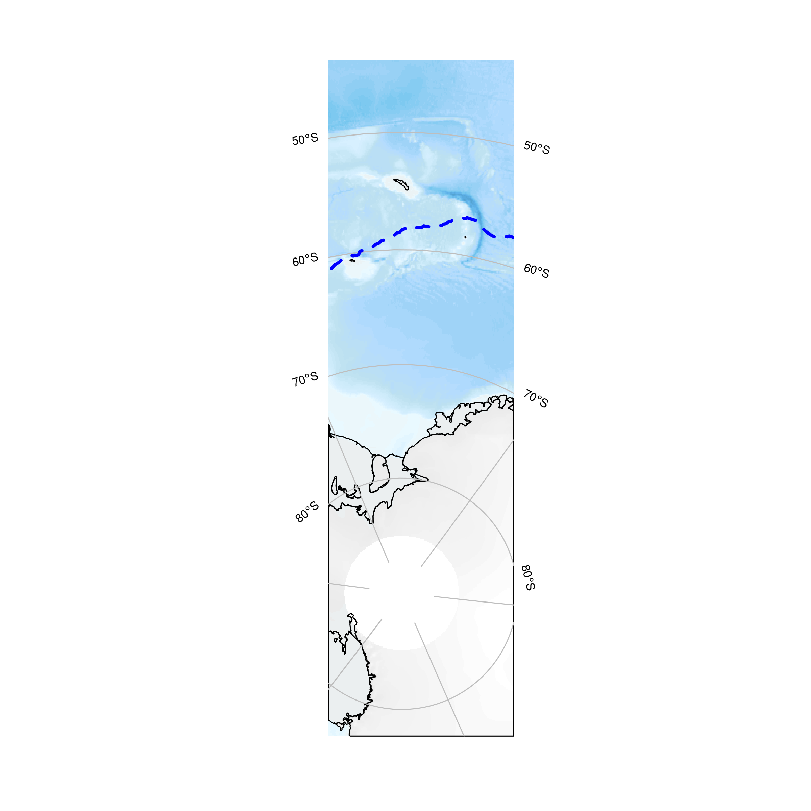
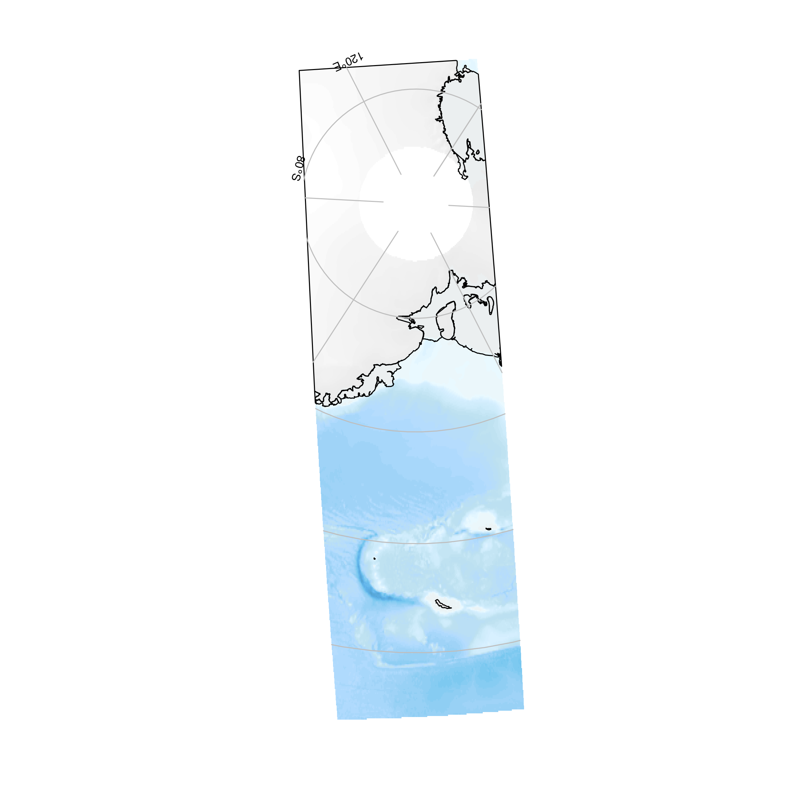

The goal of SOmap is to make publication quality round Southern Ocean maps in polar projections with little effort. This package is still very much a work in progress contact me with any questions or suggestions.
Installation
The development version from GitHub with:
install.packages("SOmap", repos = c(SCAR = "https://scar.r-universe.dev",
CRAN = "https://cloud.r-project.org"))
## or
## install.packages("remotes") ## if needed
remotes::install_github("AustralianAntarcticDivision/SOmap")Example
To make a simple map you can use the following function; use ? SOmap to see all the options for modifying layers.

There is also SOmanagement() which provides management layers for the Southern Ocean and SOleg() which gives custom rounded legends for added map layers.
## custom colours
spiritedMedium <- colorRampPalette(c("#4D4140", "#596F7E", "#168B98",
"#ED5B67", "#E27766", "#DAAD50", "#EAC3A6"))
spirited <- spiritedMedium(80)
SOmap(trim = -40)
## add an example sea ice raster, which is bundled with SOmap
plot(ice, col = spirited, add = TRUE, legend = FALSE, alpha = 0.95)
SOleg(ice, position = "topright", col = spirited, ticks = 6,
tlabs = c("0", "20", "40", "60", "80", "100"),
trim = -40, label = "Sea Ice", type = "continuous")
## add the exclusive economic zones management layer
SOmanagement(eez = TRUE)
Curved legends can be either continuous (as above) or discrete.
spirited8 <- spiritedMedium(8)
SOmap()
plot(centroids, col=spirited8, add=TRUE, pch=19)
SOleg(centroids,position = "topright", col = spirited8, ticks = 8,
tlabs =1:8, label = "Centroids", type = "discrete")
An automatic plot function SOmap_auto() will take any data in the form of longitude and latitude vectors and create a guess at a map.
ellie <- SOmap_data$mirounga_leonina
## construct and plot the map
SOmap_auto(ellie$lon, ellie$lat)
The SOmap_auto(), SOmap(), and SOmap2() functions return the data used to make the map so that further customization can be made. Plotting or printing the returned object will cause the map to be displayed in the graphics device.
data("albatross", package = "adehabitatLT")
## convert the albatross data to a single matrix of lon, lat points
albatrack <- do.call(rbind, lapply(albatross, function(z) rgdal::project(rbind(as.matrix(z[, c("x", "y")]), NA), "+proj=utm +zone=42 +south +datum=WGS84", inv = TRUE)))
## construct the map and return it, but don't plot it
alb_map <- SOmap_auto(albatrack[, 1], albatrack[, 2])Modifying this map object is currently a rather experimental process (proceed at your own risk!) but, for example, if we wished to change the points to be blue rather than red:
alb_map$pcol <- "blue"
## plot it
alb_map
We could also decide we want a reversed bathymetry color and cyan lines between the dots.
# change the line color
alb_map$lcol <- "cyan"
# reverse the bathymetry
alb_map$bathy_palette<-rev(alb_map$bathy_palette)
## plot it
alb_map
Objects from sf, sp, or raster can also be used, but note that they will be used for their extents only and will not automatically be plotted. But we can plot them easily with SOplot:
## use the bundled fronts data as an example
mydata <- SOmap_data$fronts_orsi
SOmap_auto(mydata, target = "laea", centre_lon = 147)
SOplot(mydata, col = 2)
Easy projections
SOmap goes with the philosophy “we actually rather like ourselves, and care about our experience” and so there are some easy ways to work with projections, and just map it!
.
set.seed(1)
amap <- SOmap_auto(input_points = FALSE, input_lines = FALSE)
amap
To add data to this plot we can just do so.
amap
SOplot(SOmap_data$seaice_oct, lwd = 3, col = "blue", lty = 2)
SOplot() will add data by default, and can take spatial objects or even raw longitude and latitude values (we like you). When a plot is set up the coordinate reference system used is recorded so that we can use it again. The projection currently in use is always available by running SOcrs().
SOcrs()
#> [1] "+proj=stere +lon_0=-36.8427233395983 +lat_0=-76.5139986273002 +lat_ts=71 +datum=WGS84"Many objects can be reprojected with SOproj(), including the map objects themselves.
prj <- "+proj=laea +lat_0=-90 +lon_0=147 +datum=WGS84"
## reproject a raster
SOproj(ice, target = prj)
#> class : RasterLayer
#> dimensions : 342, 326, 111492 (nrow, ncol, ncell)
#> resolution : 32837.52, 31606.02 (x, y)
#> extent : -5430639, 5274392, -5534313, 5274946 (xmin, xmax, ymin, ymax)
#> crs : +proj=laea +lat_0=-90 +lon_0=147 +x_0=0 +y_0=0 +datum=WGS84 +units=m +no_defs
#> source : memory
#> names : nt_20181015_f18_nrt_s.bin
#> values : 2.059468, 100 (min, max)
## reproject a SOmap
SOproj(amap, target = prj)
Note that we must assume raw input is “longitude/latitude”, and the function will issue a warning.
Please note that the SOmap project is released with a Contributor Code of Conduct. By contributing to this project, you agree to abide by its terms.